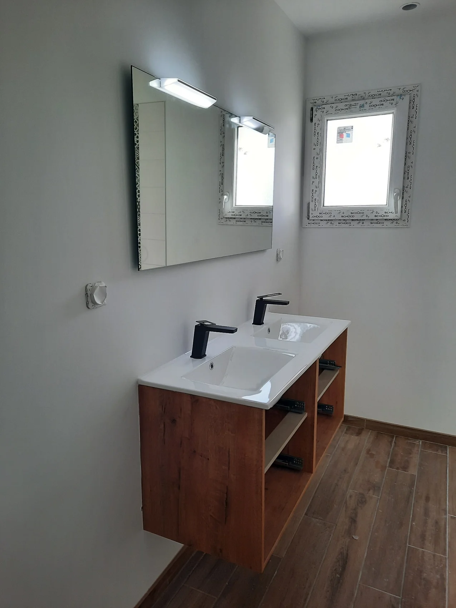

Salle de bains · Manche & CalvadosVotre salle de bains à Périers,
créée ou rénovée.
Douche, vasques, sanitaires et réseaux de plomberie : Sébastien Mauger crée votre nouvelle salle de bains ou rénove l’existante, avec l’alimentation en eau et les évacuations qui vont avec.
Décrire mon projetSébastien Mauger14 ans d’expérience · Votre interlocuteur direct

01 / LA PRESTATION
Ce que Sébastien réalise.
Un seul interlocuteur, de la première étude à la fin du chantier.
Création de salle de bains
Un nouvel espace complet, réseaux de plomberie et évacuations compris.
Rénovation complète
Remise à neuf d’une salle de bains existante : douche, vasques et sanitaires.
Douche et sanitaires
Douche, colonne ou mitigeur, WC et équipements sanitaires.
Vasques et robinetterie
Meubles vasques, lavabos et robinetterie raccordés proprement.
Réseaux et évacuations
Rénovation des réseaux d’eau et création d’évacuations pour placer chaque équipement au bon endroit.
Dépannage sanitaire
Une intervention sur vos sanitaires quand quelque chose ne fonctionne plus.
BIEN PRÉPARER
Un projet de salle de bains
se prépare.
Avant de choisir les équipements, quelques questions aident : faut-il garder la baignoire ou passer à une douche ? Les arrivées d’eau et les évacuations peuvent-elles rester à leur place ? Quelle production d’eau chaude pour toute la famille ?
Envoyez des photos de la pièce et ses dimensions approximatives : Sébastien pourra préparer le rendez-vous et vous dire ce qui est faisable.
La plomberie est le cœur du projet : c’est elle qui permet de déplacer une douche ou des toilettes, et qui garantit une salle de bains qui dure.
02 / ÉTAPE PAR ÉTAPE
Comment se déroule
votre projet.
Sébastien étudie votre besoin et vous accompagne à chaque étape, avec un devis adapté à votre projet.
Décrire mon besoin- 01
Vous décrivez votre projet
Ce que vous voulez changer, des photos de la pièce et ses dimensions approximatives.
- 02
Rendez-vous sur place
Sébastien vérifie les arrivées d’eau, les évacuations et ce qui est possible dans la pièce.
- 03
Devis
Un devis adapté à votre projet et à vos choix d’équipements.
- 04
Travaux
Plomberie, évacuations, pose des équipements et raccordements.
SUR LE TERRAIN
Des chantiers
de msplomberie.
Quelques installations réalisées par Sébastien. Voir toutes les réalisations.
VOS QUESTIONS
Avant de
vous lancer.
Peut-on déplacer la douche ou les toilettes ?
La création et la modification d’évacuations font partie du métier. La faisabilité dépend de la pente disponible et de la configuration de la pièce : elle est vérifiée sur place.
Comment présenter mon projet ?
Utilisez le formulaire en précisant votre commune et ce que vous souhaitez faire. Des photos de la pièce et ses dimensions approximatives aident Sébastien à préparer sa réponse.
Intervenez-vous aussi en dépannage ?
Oui, Sébastien intervient aussi pour le dépannage de vos sanitaires. Décrivez la panne dans le formulaire, avec une photo si possible.
Dans quel secteur intervenez-vous ?
Sébastien est basé à Périers et se déplace dans la Manche et le Calvados selon le projet, notamment à Saint-Lô, Valognes et Granville. Indiquez votre commune dans le formulaire.
PÉRIERS · MANCHE & CALVADOS
Votre nouvelle salle de bains commence par un message.
Sur les chantiers, Sébastien n’est pas toujours disponible au téléphone. Décrivez votre projet dans le formulaire : il en prend connaissance et revient vers vous.
Lundi au vendredi · 8 h–12 h · 13 h 30–17 h
07 78 81 84 21